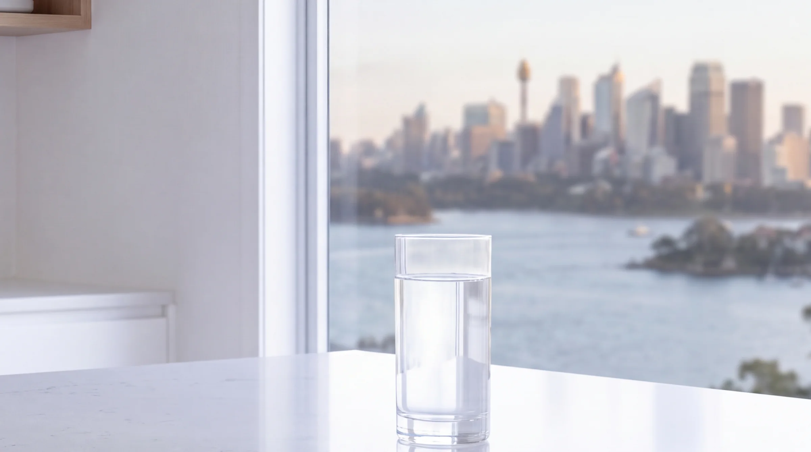
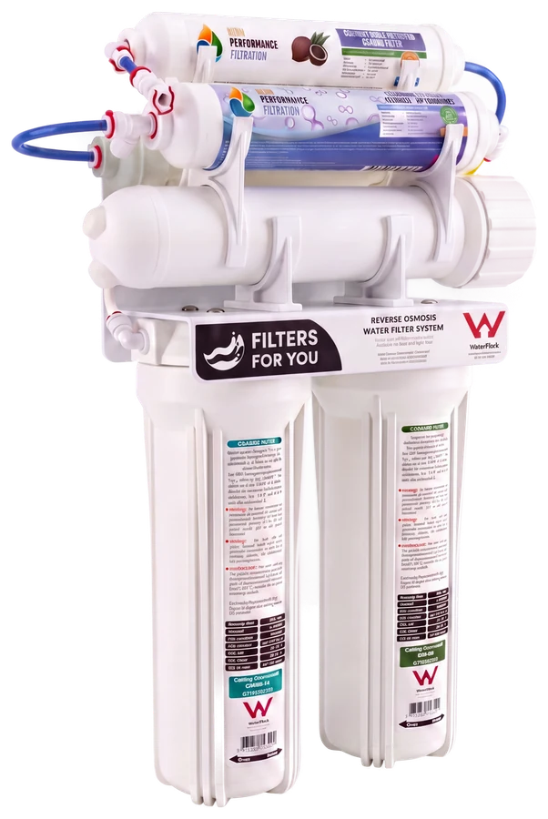
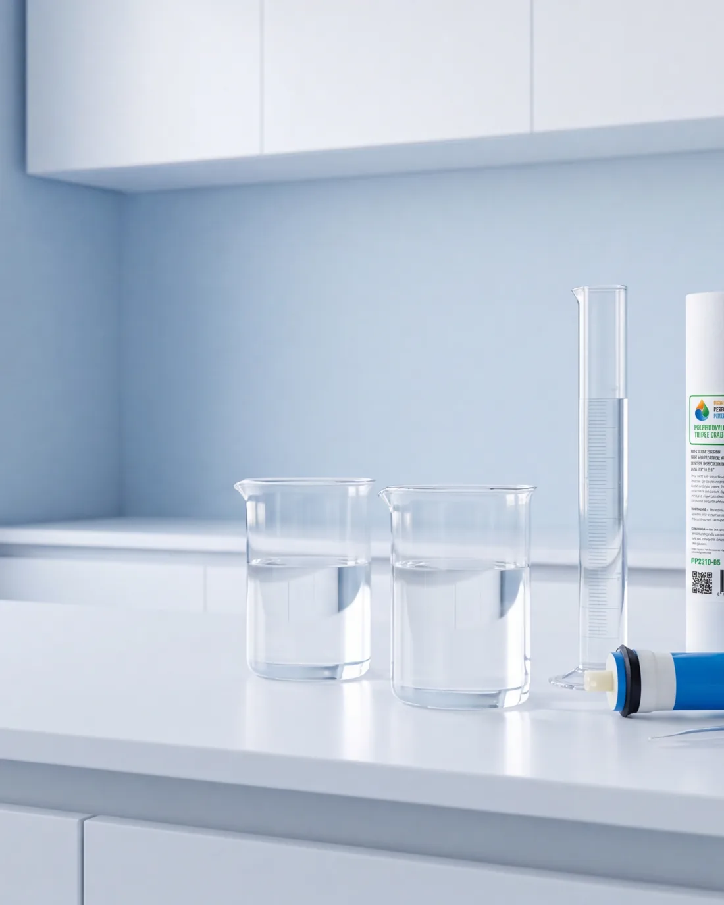
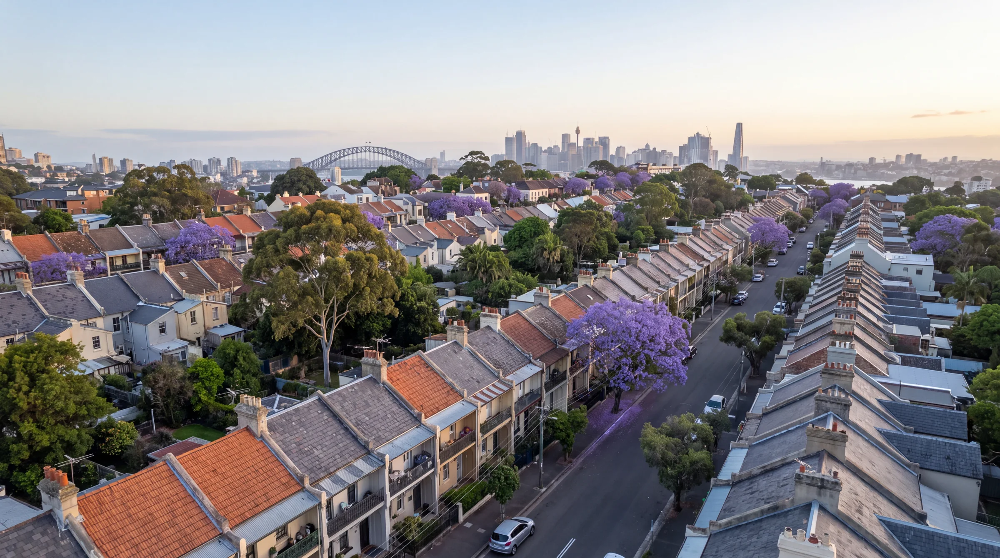
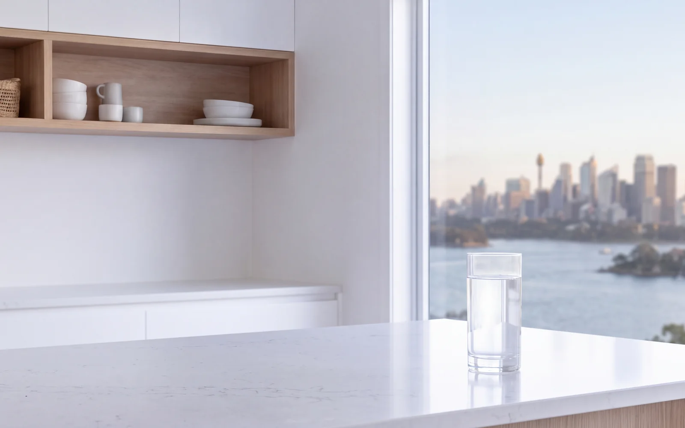

Every system Filters For You fits is certified to the Australian standard, installed by a licensed plumber, and every certificate is on this page.
 WaterMark certificate 23247
AS 3497:2021. 131 models, every one active, valid to October 2028.
WaterMark certificate 23247
AS 3497:2021. 131 models, every one active, valid to October 2028.
- NSW plumbing licence 461511C. Current, on the government register.
- NSF/ANSI 42, 53 and 58 compliant filter media inside.
- Independent laboratory report B767408. Published in full below.
Every certificate, open to read.
We do not ask you to take our word for it. Both WaterMark certificates, the certificate of conformity, the laboratory report, the cartridge specification and the licence. The registers are the government's own, not ours.
- 01 WaterMark certificate 23247The Pure reverse osmosis range and the Pure Home whole house system. 131 models, every one active. Government registerOpen
- 02 WaterMark certificate 22780The High Performance Filtration EQ and LSRO under sink systems and their cartridges. 292 models, every one active. Government registerOpen
- 03 Certificate of ConformityCertificate 23247 in full: every model on the schedule, signed by the certifier. PDFOpen
- 04 Certificate of AnalysisTap water measured beside reverse osmosis water and the alkaline stages, across more than 40 parameters. PDFOpen
- 05 Hydrogen alkaline cartridge specificationpH, ORP and dissolved hydrogen across the life of the cartridge. Supplier data, labelled as such. PDFOpen
- 06 NSW plumbing licence 461511CJean-Paul Barbar's licence on the NSW Government register. Enter the number and read the record. Government registerOpen
Reading these honestly. WaterMark is Australia's mandatory plumbing product certification. It confirms a product is fit to connect to drinking water and may legally be installed by a licensed plumber. It is a plumbing approval, not a health claim. The filter media in our systems is manufactured in compliance with NSF/ANSI standards 42, 53 and 58.
Australia's mandatory certification for plumbing products, run by the Australian Building Codes Board. Filters For You holds certificates 23247 and 22780.
One mark. Three things it proves.
- 01
Tested to the Australian standard.
AS 3497:2021, drinking water treatment systems, design and performance. Tested by a JAS-ANZ accredited body, not by the people who sell it.
- 02
Listed on the government register.
Certificate 23247 on the Australian Building Codes Board's WaterMark register. 131 models, every one active, valid to 3 October 2028. You can search it yourself.
- 03
Installed by a licensed plumber.
Anything connected to drinking water in NSW has to be. Every Filters For You installation is carried out under NSW plumbing licence 461511C.

Held on the NSW Government's Verify NSW register, the same place Fair Trading sends consumers.
Fitted by a licensed plumber. Every time.
Jean-Paul Barbar holds the licence, and it is on the government register for anyone to check.
- Licence number
- 461511C
- Status
- Current to 26 March 2027
- Classes
- Plumber, drainer, gasfitter, LP gasfitter
- Checked on
- Verify NSW, the government register
Book a free inspectionCheck the licence on Verify NSW
The licence number is on every page of this site, every quote and every invoice. That is the law in NSW, and it is how you know who is at your door.
Every system on the register.
Filters For You installs High Performance Filtration systems and cartridges across Sydney. Nothing we fit is off the WaterMark register.


The filter media inside every one is manufactured in compliance with NSF/ANSI 42, 53 and 58. NSF is an international standard for the media, never an Australian requirement. WaterMark is the Australian one, and every system carries both.

Measured, not claimed.
Independent laboratory report B767408, run on the laboratory's own supply. A demonstration of what the membrane does, not a test of Sydney water. Read the report.

Installed across Sydney, from Croydon Park.
Thirteen districts, one licensed plumber, the same certified systems in every one.
Five stars, every single time.
Every review on Google, and not a single complaint on file.
“Wow what difference! You can never go back to drinking normal tap water after having this system installed.”
“The setup is super neat and the tap looks beautiful. Our water tastes exceptionally clean and fresh.”

“Great job from Jean-Paul installing our 7 stage reverse osmosis. Very happy with the install.”
“Very pleased with Jean-Paul after installing our 5 stage reverse osmosis system. Our water tastes significantly better now.”

“Now that’s water! I don’t have to buy bottled water anymore. What a difference.”
“Jean-Paul installed our smart reverse osmosis system and did a wonderful job. Our water quality is absolutely great!”
“He arrived on time, worked neatly and made the whole process very simple. The water tastes much cleaner now.”
“Absolutely fantastic experience! Professional, extremely knowledgeable, friendly, and the whole process seamless.”

“From start to finish the interaction, communication and experience was positive, fast and comprehensive.”
“Extremely knowledgeable and professional service. An easy installation and complete satisfaction.”

“Fantastic home filters. Clean and easy to deal with. Highly recommend.”
“Great to deal with, quality work. Highly recommend.”
“Jean-Paul came for a free inspection and provided everything I needed to make the right decision.”

A free inspection, or the installation.
Tell us the suburb and what you're thinking about. A person comes back the same day, in writing, and nothing changes on the day.
Your details are with us. A person will come back to you with a fixed price in writing. Message before 4pm on a weekday and it’s the same day.
Rather talk it through? Call 0430 546 749, or book a free inspection.
WaterMark certified systems, NSF/ANSI compliant media. Fitted by Jean-Paul Barbar, NSW plumbing licence 461511C.
WaterMark certified water filters in Sydney, written down.
Everything the page shows, in plain words. What WaterMark certification is, what NSF/ANSI compliance means and does not mean, what each of the two certificates covers, the licence, the laboratory report and where Filters For You installs. Open what you want to read.
What WaterMark certification is, and why a water filter needs it
WaterMark is Australia's mandatory certification for plumbing products. A water filter connected to a home's drinking water supply has to carry it, and it has to be installed by a licensed plumber.
The scheme is run by the Australian Building Codes Board. A product is tested by an accredited conformity assessment body against the relevant Australian standard, for drinking water treatment systems that is AS 3497:2021, and if it passes it is listed on the public WaterMark register with a certificate number, the models covered and an expiry date. The mark on the housing means the product is fit to connect to the mains: its materials will not contaminate the water and its design will hold pressure. It is a plumbing approval. It is not a health claim, and Filters For You never presents it as one.
Every system Filters For You installs across Sydney is on that register, under certificate 23247 or certificate 22780. Both are published above and both open the government's own entry, so the check takes a minute and does not rely on us.
NSF/ANSI standards, and what they mean beside WaterMark
WaterMark says a product may legally be connected to drinking water in Australia. NSF/ANSI standards describe what filter media is built to do. They are different questions, and a good system answers both.
NSF/ANSI 42 covers aesthetic effects, chlorine, taste and odour. NSF/ANSI 53 covers health related contaminants such as lead and cysts. NSF/ANSI 58 covers reverse osmosis systems and their membranes. The carbon blocks, sediment cartridges and membranes in the systems Filters For You installs are manufactured in compliance with those standards, and the reverse osmosis membrane's tested rejection rates are published on the reverse osmosis page.
Two things we hold to. NSF is international and is never an Australian legal requirement; WaterMark is. And compliance with a standard is the manufacturer's statement about how the media is built, which is exactly how we describe it. The plumbing approval and the media standard sit side by side on every system we fit, and neither one stands in for the other.
WaterMark certificate 23247, the one behind the Pure range and the Pure Home whole house system
Certificate 23247 covers 131 models to AS 3497:2021, every one active, valid to 3 October 2028. The Pure reverse osmosis and under sink range and the Pure Home whole house system sit on it.
- Certifier. Pro-Switch Pty Ltd, a JAS-ANZ accredited conformity assessment body. First issued 15 December 2016, current revision 21 April 2026.
- Standard. AS 3497:2021, drinking water treatment systems, design and performance requirements, to be installed in accordance with the Plumbing Code of Australia.
- On the schedule. The sediment and carbon block cartridges, the granular carbon, the 50 GPD reverse osmosis membrane, the alkaline and the hydrogen rich alkaline cartridges, and the housings and manifolds they sit in.
The certificate of conformity is published above as a 15 page PDF, and the register entry is one click from it. If you are comparing a system from anywhere else, ask for the certificate number and look it up the same way.
WaterMark certificate 22780, the EQ and LSRO systems
Certificate 22780 is the second register entry behind what Filters For You installs. It covers the High Performance Filtration EQ and LSRO under sink systems and the cartridges that feed them: 292 active models, valid to 14 November 2028.
It was issued by IAPMO Oceania under WMTS-103:2016, the WaterMark technical specification for water treatment systems, first certified in November 2018. The two certificates are not interchangeable. 23247 is the AS 3497 certificate for the Pure range and the Pure Home whole house system; 22780 is the WMTS-103 certificate for the EQ and LSRO systems. When you want to know which one covers the system in your kitchen, ask, and we will point you at the exact line on the register.
The NSW plumbing licence behind every installation
Filters For You installations are carried out by Jean-Paul Barbar under NSW plumbing licence 461511C, current to 26 March 2027, in four classes: plumber, drainer, gasfitter and LP gasfitter.
In NSW the Home Building Act requires the licence number on all advertising, on every contract and on every quote, which is why it is on every page of this site. The licence is held on the NSW Government's Verify NSW register, and the link above opens that register so you can enter the number and read the record yourself. A WaterMark certified product installed by an unlicensed person is not a compliant installation, so the two always go together.
The laboratory report, and what it does and does not show
Independent laboratory report B767408 measures a tap water sample beside the same water after reverse osmosis and after the alkaline stages, across more than 40 parameters.
- Fluoride. 0.74 mg/L in the tap water, under 0.05 mg/L after reverse osmosis.
- Dissolved solids. 220 mg/L in the tap water, 5.0 mg/L after reverse osmosis.
- Free chlorine. 0.52 mg/L in the tap water, 0.02 mg/L after reverse osmosis.
- The metals panel. Lead, arsenic, cadmium, chromium, copper, nickel and antimony, each measured before and after.
Read it for what it is. The sample was the laboratory's own supply, so it demonstrates what the membrane does to water; it is not a test of Sydney's water, and we never present it as one. The hydrogen alkaline cartridge specification published beside it is the supplier's own data across the life of the cartridge, and we label it that way. Both are there so the numbers we quote are the numbers you can read.
Where Filters For You installs WaterMark certified systems
Across Greater Sydney, from our base in Croydon Park. The same certified systems, the same licensed plumber and the same published paperwork in every district.
Questions before the quote.
The same answers we give on the phone, written down. If yours is not here, call and ask.
What is WaterMark certification on a water filter?
WaterMark is Australia's mandatory certification for plumbing products. Anything connected to a building's drinking water supply has to carry it, and it has to be installed by a licensed plumber. A WaterMark certified water filter has been tested by an accredited body to AS 3497:2021 and is listed on the Australian Building Codes Board register. Every system Filters For You installs in Sydney is on that register under certificate 23247 or 22780.
Are the water filters Filters For You installs WaterMark certified?
Yes. The Pure reverse osmosis and under sink range and the Pure Home whole house system are on certificate 23247, 131 models, every one active, valid to 3 October 2028. The High Performance Filtration EQ and LSRO systems are on certificate 22780, 292 models, valid to 14 November 2028. Both certificates are published on this page and both link to the government register.
Is NSF certification the same as WaterMark?
No, they cover different things. WaterMark is the Australian plumbing approval: the product is safe to connect to drinking water and may legally be installed. NSF/ANSI standards are international performance standards for filter media, 42 for taste and odour, 53 for health related contaminants and 58 for reverse osmosis. The media in the systems Filters For You installs is manufactured in compliance with NSF/ANSI 42, 53 and 58. NSF is not an Australian legal requirement and never replaces WaterMark.
Does WaterMark certification guarantee the water quality?
WaterMark certifies the product: its materials, its design and that it will not contaminate the drinking water supply. It is a plumbing approval, not a health claim. What the system does to the water is shown separately. The independent laboratory report on this page measures tap water beside reverse osmosis water across more than 40 parameters, and the cartridge specification sheets show the supplier's own performance data.
How do I check a WaterMark certificate myself?
Open the Australian Building Codes Board WaterMark product search at watermark.abcb.gov.au and enter the certificate number. Filters For You's certificates are 23247 and 22780, and the links on this page open those exact entries. The register shows the certifier, the standard, every model listed and the expiry date. If a product is not on that register, it is not WaterMark certified, whatever the box says.
Who installs a WaterMark certified water filter in Sydney?
A licensed plumber has to. In NSW the licence number must appear on all advertising, and it can be checked on the NSW Government's Verify NSW register. Filters For You installations are carried out by Jean-Paul Barbar, NSW plumbing licence 461511C, current to March 2027, across Greater Sydney from Croydon Park.
What does the certificate of analysis actually show?
Laboratory report B767408 compares a tap water sample with the same water after reverse osmosis and after the alkaline stages, across more than 40 parameters including fluoride, dissolved solids, chlorine and a full metals panel. Fluoride measured 0.74 mg/L in the tap water and under 0.05 mg/L after reverse osmosis. It was run on the laboratory's own supply as a demonstration of what the membrane does, so it is not a test of Sydney water, and it is published so you can read it in full.
Ready when you are.
A WaterMark certified system, fitted by a licensed plumber, with the paperwork you have just read. Installed in about two hours, serviced every year after, covered for life while you stay with us.
Rather talk it through? Call 0430 546 749.